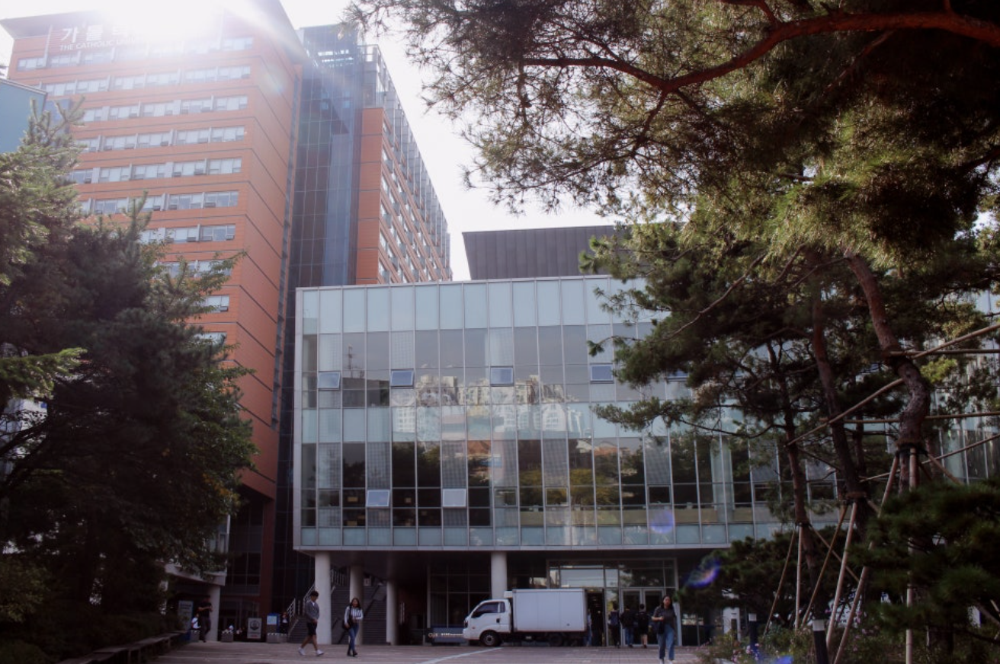
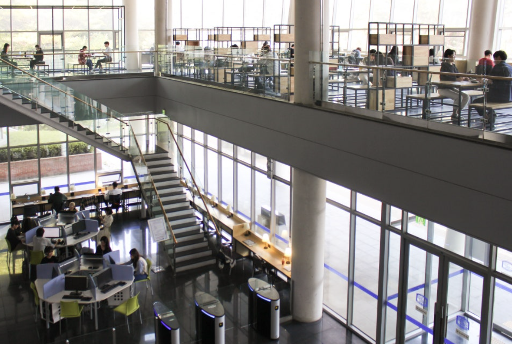

김수환관 건물
인문 커뮤니티 라운지 1,2층이 장소가 의미 있는 이유
김수환관 엘레베이터가 없었다고 생각하면 정말 끔찍하다...
시험기간 중앙도서관까지 가기 힘들 때 학생식당과 인문 커뮤니티 라운지를 애용합니다.
밥 공부 강의 카페 헬스 스터디 모임까지 모든것을 한 건물에서 해결 가능한 유일한 곳
찾아가는 방법
가톨릭대 정문 바로 앞 건물
여기에서 해볼 것
- 새 학기 맞이 헬스장 등록하기
- 학생식당에서 간식 먹으면서 공부하기